{kind=link}
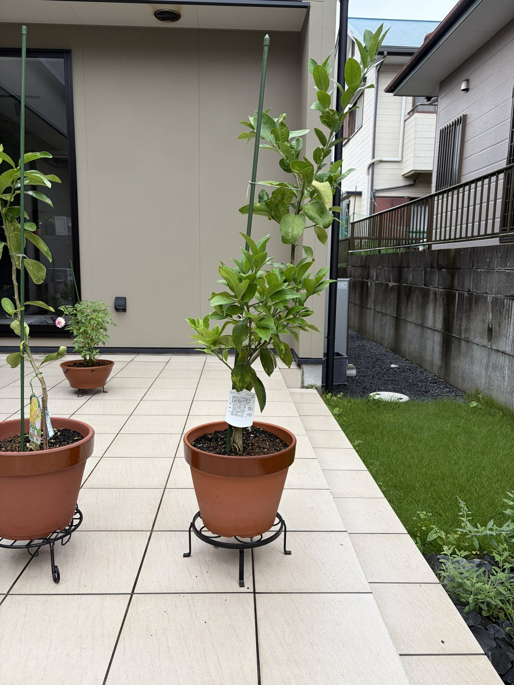
植え付けから約4か月。猛暑を越えて樹形はさらに充実し、主幹の先端は支柱の頂点をはっきり追い越した。株の上半分は濃緑の成葉が密に茂り、枝先には秋芽(黄緑の若葉)が複数展開中で、成長点は今も動いている。8月に見えた下葉の黄化はほぼなく、全体としては順調。拡大して見ると、中〜上段の数枚に葉縁の欠け・小さな穴・かじり跡があり、うち1枚は黄白色に色が抜けて内側に巻いた葉になっている(巻き葉はエカキムシ被害葉の典型症状だが、白い蛇行状の筋は写真では確認できず)。下段の大きな葉に見える黄色いまだら模様は、8/09 に現物で「以前からある物理的な傷跡」と確認済みのものと同じ位置・同じ見え方で、範囲は広がっていない。幹には「マイヤーレモン」の説明ラベルが紐で付いたまま。土の表面は乾き気味で、鉢・受け皿まわりに異常なし。実は付いていない(7月に全摘花済み)。
この葉の欠け・穴の一部はアゲハの幼虫によるもの。ただし8月に続いて毎日、卵と幼虫を手で取り除く(テデトール)作業を継続しているため、被害はこの程度に食い止められている。秋芽が次々に動くこの時期でも葉数を減らさずに済んでいるのは、この毎日の見回りの成果。
注意:9月は秋の成長期で、秋芽は柔らかく虫の標的になりやすい。アゲハの発生は10月頃まで続くので、新芽が動いている間は毎日の卵・幼虫チェックを続ける(卵は1mm前後の黄白色の球、葉の表・裏どちらにも産み付けられる)。巻いた葉・白い筋のある葉は幼虫ごとちぎって処分し、被害が軽い葉は葉数確保のため残す。9月下旬になったらお礼肥(緩効性固形をパッケージ表示量)を株元から3〜5cm離して四方に置く(追肥早見表)。9月は台風が最大の脅威なので、強風予報が出たら鉢を倒れない場所へ移すか固定する。太った幹に支柱の結束ひも・ラベルの紐が食い込んでいないか確認し、食い込む前に緩めて8の字に結び直す(6/13から継続の宿題)。
{kind=link}
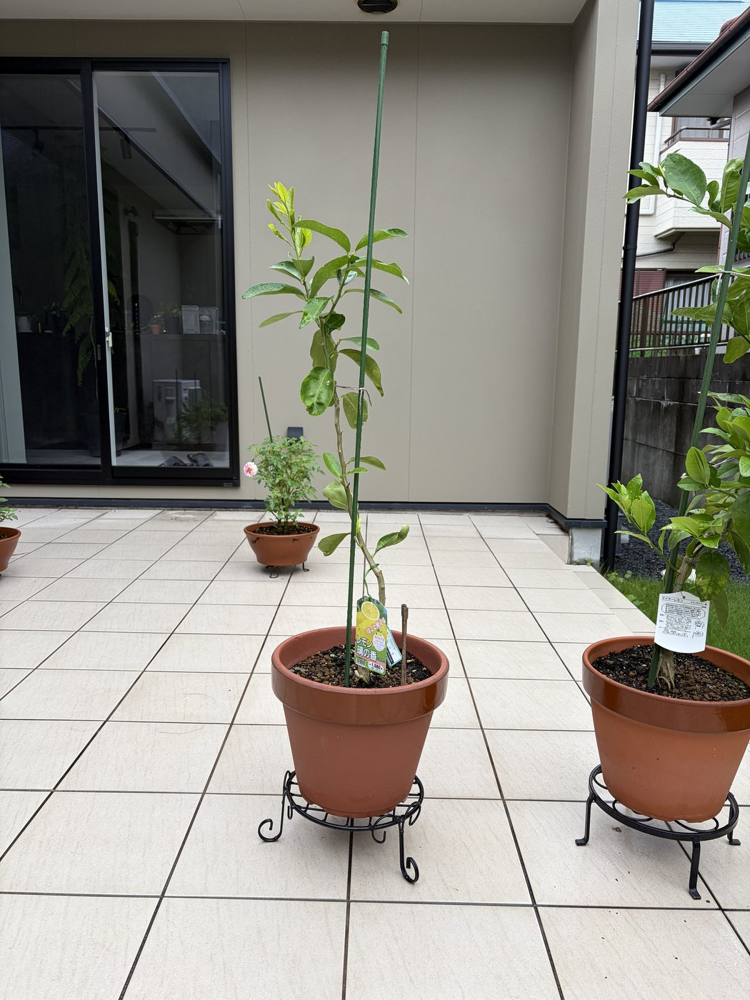
植え付けから約4か月。樹形は相変わらず細身で、幹の中間は葉が少ないままだが、先端に鮮やかな黄緑の秋芽がまとまって伸び、新しい葉が数枚展開している。8月に良くなった上部の葉は厚みと照りを保ち、落葉は見られない。鉢の土に挿さっている茶色い棒は手入れ用の割り箸で、芽でも枝でもない(拡大すると先端に割り箸特有の割れ目があり、角ばった木肌が分かる)。幹の低い位置にも葉が付いているが、これは 8/09 の写真にも写っており今回新しく出たものではない。台木芽(接ぎ木部より下から出る芽)は今回も見当たらない。幹には品種ラベル(「レモン 璃の香」)と種苗登録ラベルの2枚が付いたままで、支柱と幹を結ぶ緑のひもは幹に接して巻かれている。土の表面には緑色の苔・藻がうっすら出ている。蕾・花は今回なし(7/18 に摘花済み)。
注意:今後、接ぎ木部より下から芽が出たらそれは台木芽なので付け根から掻き取る(カラタチ台木なら葉が三出葉=小葉3枚なので見分けやすい)。鉢に挿した割り箸や2枚のラベルは写真では芽・枝と紛らわしいので、迷ったら現物で確かめる。結束ひもは幹に食い込む前に緩めて8の字に結び直し、ラベル2枚の紐も外す。土表面の苔・藻は水のやり過ぎか日照不足のサインなので、表土が乾いてから水をやるリズムに戻し、よく日に当てる(細身の樹は徒長しやすい)。9月は秋の成長期、柔らかい秋芽にアゲハ・エカキムシが付きやすいので葉裏の見回りを継続。9月下旬にお礼肥(追肥早見表)。台風前は鉢を避難させる。
{kind=link}
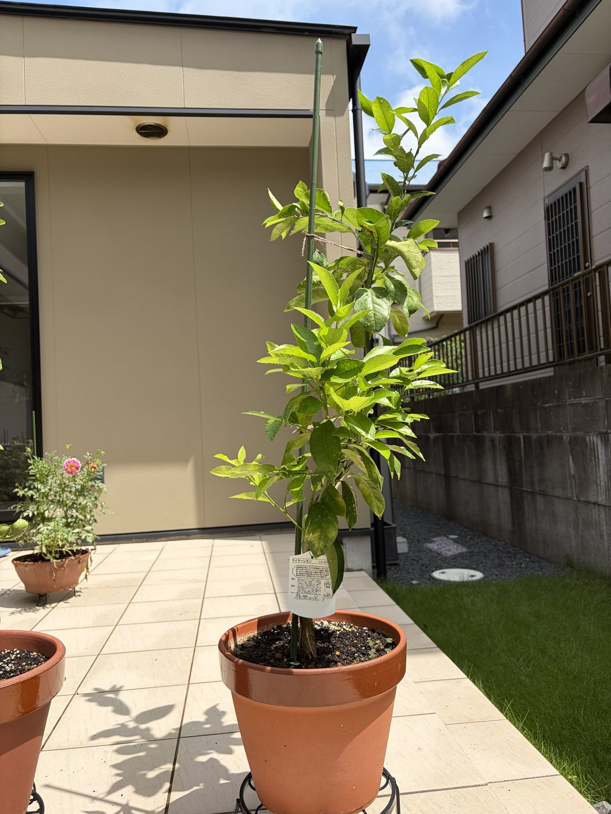
植え付けから約3か月。7月のエカキムシ被害と摘花を経ても樹勢は良好で、株の上半分は葉が密に茂りボリュームは7/11よりさらに増した。主幹先端の新梢が支柱の頂点を追い越し、右上に鮮やかな黄緑の若葉を展開中(夏芽)。濃緑の成葉と黄緑の若葉が混在し、6〜7月に目立った下葉の黄化は今回ほとんど見られない。中段の大きな葉に見える濃淡のまだらと表面の凹凸は、以前からある物理的な傷跡(擦れ・打ち傷)で病害ではないと現物で確認済み。すす病のような黒いすす・ベタつきはなく、範囲も広がっていない。幹には品種ラベルが付いたまま。
この2か月はほぼ毎日アゲハチョウが飛来して新芽・若葉に産卵しており、見つけ次第手で取り除く(テデトール)作業を毎日継続している。それでも見落としから孵化することがあり、その場合は幼虫も都度取り除いている。葉が食い荒らされずにこのボリュームを保てているのは、この毎日の見回りの成果。
注意:傷跡の葉は光合成できるのでそのまま残す(1年目は葉数が財産)。ただし新しく現れた黒ずみ・ベタつきはすす病(カイガラムシ・アブラムシ由来)のサインなので、既存の傷跡と混同しないよう位置を覚えておく。新梢が伸びるこの時期はエカキムシが再発しやすいので、若葉の白い蛇行状の筋を継続チェック。アゲハの発生は10月頃まで続くため、新芽が動いている間は毎日の卵チェックを継続する(卵は1mm前後の黄白色の球で、葉の表・裏どちらにも産み付けられる)。支柱の結束ひもが太った幹に食い込んでいないか確認し、緩めて8の字に結び直す。ラベルの紐も食い込む前に外す(6/13から指摘)。8月は追肥をしない(追肥早見表)、9月下旬〜10月のお礼肥まで待つ。猛暑期はタイルの照り返しで鉢が高温になるので、朝夕2回の水やりと鉢まわりの温度に注意(8月のカレンダー)。台風シーズンなので強風前は鉢を倒れない場所へ移す。
{kind=link}
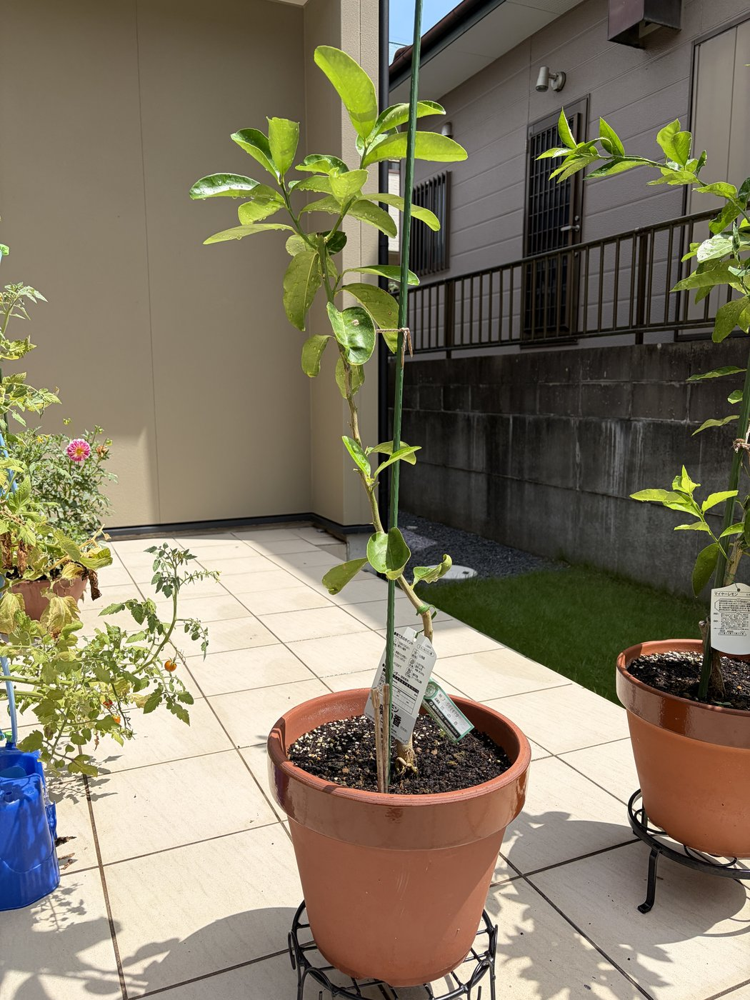
植え付けから約3か月。7/18の摘花後も落葉はなく、上部の葉は一回り大きく、厚みと照りのある濃緑に変わって葉の質は明らかに良くなった。ただし樹形は細身のままで、幹の中間は葉が少なくスカスカな状態が続き、ボリュームの差はマイヤーとまだ開いている。新しい蕾・花は確認できず、摘花後のエネルギーは枝葉の充実に回っている様子。土際近くに見える細長い緑色のものは種苗登録ラベルで、芽ではない(白い品種ラベルと合わせて2枚が幹に付いたまま)。台木芽は今回見当たらず、枝分かれはいずれも接ぎ木部よりかなり上から出た正規の側枝。葉に付いた水滴は朝の水やり跡。
アゲハチョウの産卵はマイヤーと同様で、この2か月ほぼ毎日、新芽・若葉に産み付けられた卵を手で取り除いている(テデトール)。孵化してしまった幼虫も見つけ次第取り除く。葉数の少ない璃の香は数枚食べられるだけでも打撃が大きいので、この毎日の見回りが樹を守っている。
注意:2枚のラベルの紐は幹に食い込む前に外す。今後、接ぎ木部より下から芽が出たらそれは台木芽なので、見つけ次第付け根から掻き取る(放置すると養分を奪われる)。細身の樹は日照不足で徒長しやすいので引き続きよく日に当てる。8月は追肥なし(追肥早見表)、9月下旬〜10月のお礼肥まで待つ。猛暑期は朝夕2回の水やりと、乾燥で増えるハダニ・アゲハの卵を葉裏で重点チェック(8月のカレンダー)。
(この日はマイヤーの記録なし)
{kind=link}
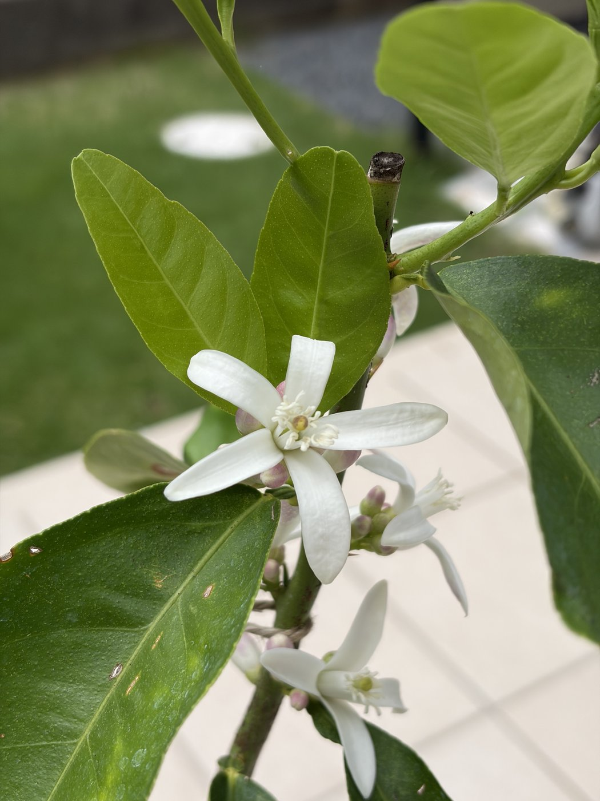
{kind=link}
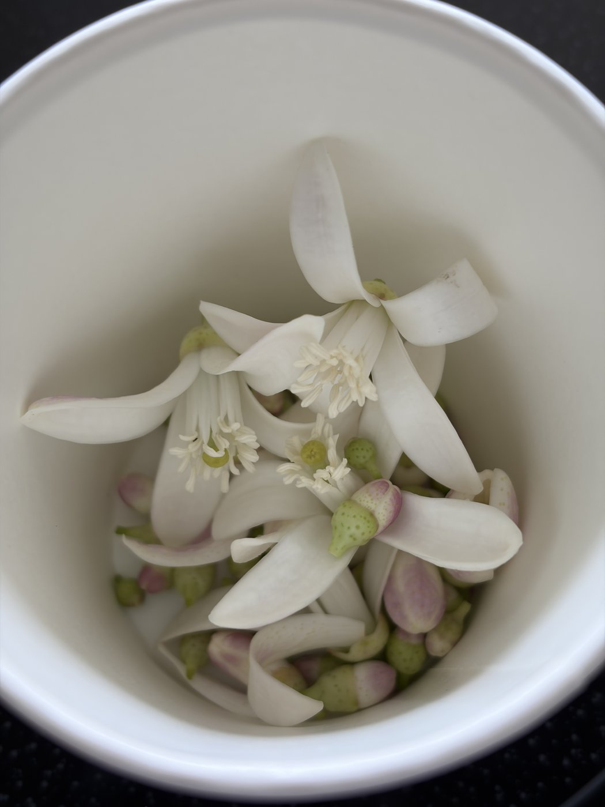
7/11に確認した初の蕾が1週間で開花し、璃の香として初めての開花を記録。白い5〜6弁の花が枝先に複数、周囲には紫紅色を帯びたつぼみも多数ついた。雄しべは白く葯は黄色、雌しべ(柱頭)は黄緑で、レモンらしい花。細身の樹ながら花を付けたのは、根が活着し木が充実してきたサイン。マイヤー(7/04)と同じくガイドの1年目方針に従い、開いた花とつぼみを全て摘み取った(摘花)。回収量はざっと十数輪ほどで、マイヤー(30〜40輪)より控えめ。
注意:今後もつぼみが上がったら都度摘花し、花・実ではなく根と枝葉の充実にエネルギーを回す。細身の樹なので特に消耗を避けたい。摘花の切り口から病気が入らないよう、盛夏の朝の水やりと葉裏のアゲハ・ハダニ確認を継続。マイヤーで出たエカキムシが璃の香の新芽にも来ていないか、葉裏・若葉を重点チェックする。
{kind=link}
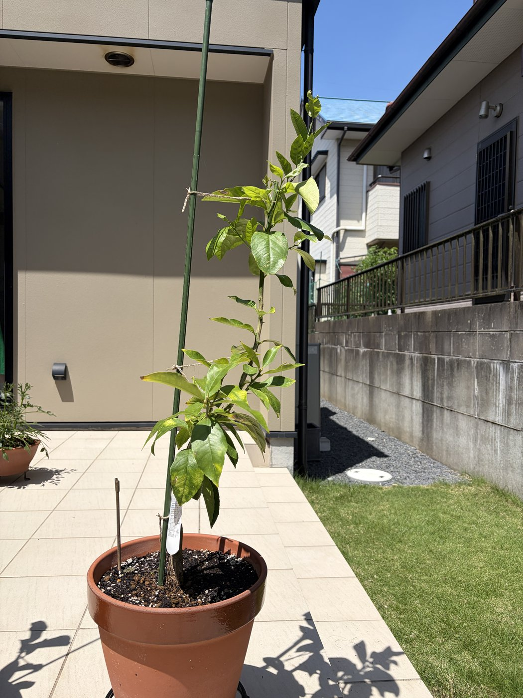
{kind=link}
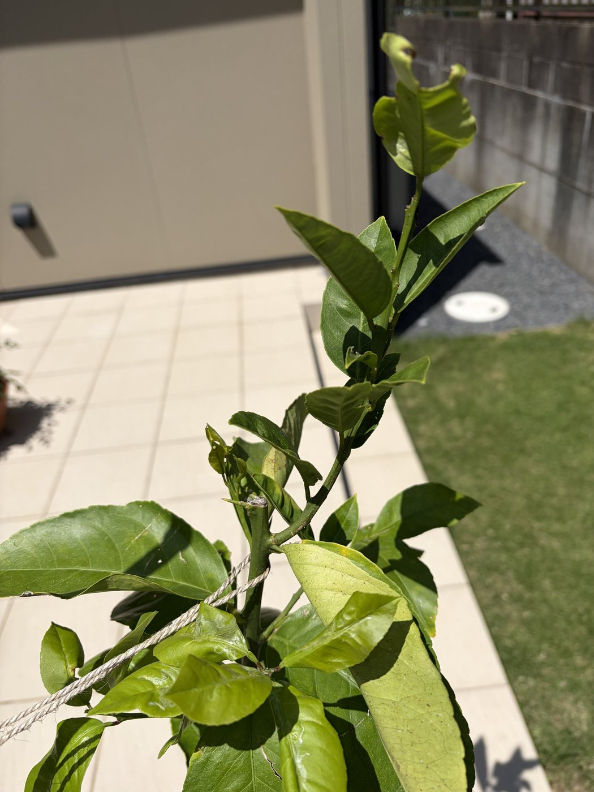
{kind=link}
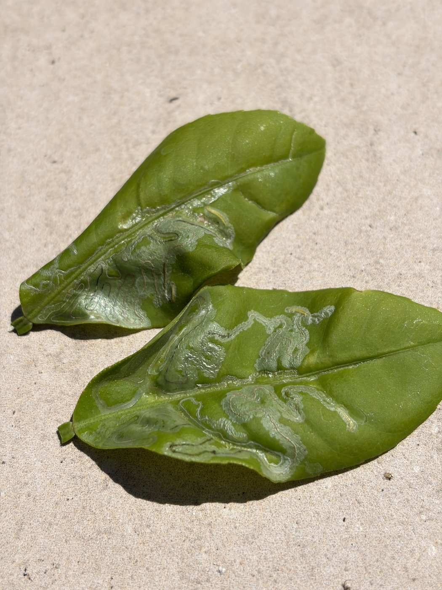
植え付けから約2か月。摘花(7/04)後も樹勢は落ちず、上部を中心に葉数が増えて全体のボリュームは6月より明らかに増した。新梢は支柱の上部まで伸長。中〜下段には黄緑〜黄色の葉が残るが、古い葉の入れ替わりの範囲。拡大写真では枝先の新梢がさらに伸び若葉が展開中で、途中に摘花跡の切り口が見える。一方、先端の若葉に巻き・縮れがあり、別の葉には白い蛇行状の筋も確認 → エカキムシ(ミカンハモグリガ)の被害と判断。幼虫が葉の内部を食べ進んだ跡で、若葉の変形も同じ被害の典型症状。被害のひどい葉2枚を摘み取った(3枚目の写真)。よく見ると筋の中に黄緑色の幼虫が数匹残っているのが分かる。
注意:白い筋のある葉・ひどく縮れた葉は幼虫ごと摘み取って袋に入れて処分(被害部は回復しない)。ただし1年目は葉数が財産なので、筋が少しだけの葉は残す。エカキムシは夏〜秋の新芽のたびに発生するので、新芽展開期は葉裏を重点チェック。巻いた葉はアブラムシ併発がないかも確認。梅雨明け後は鉢の乾きが速いので朝の水やりを徹底。
{kind=link}
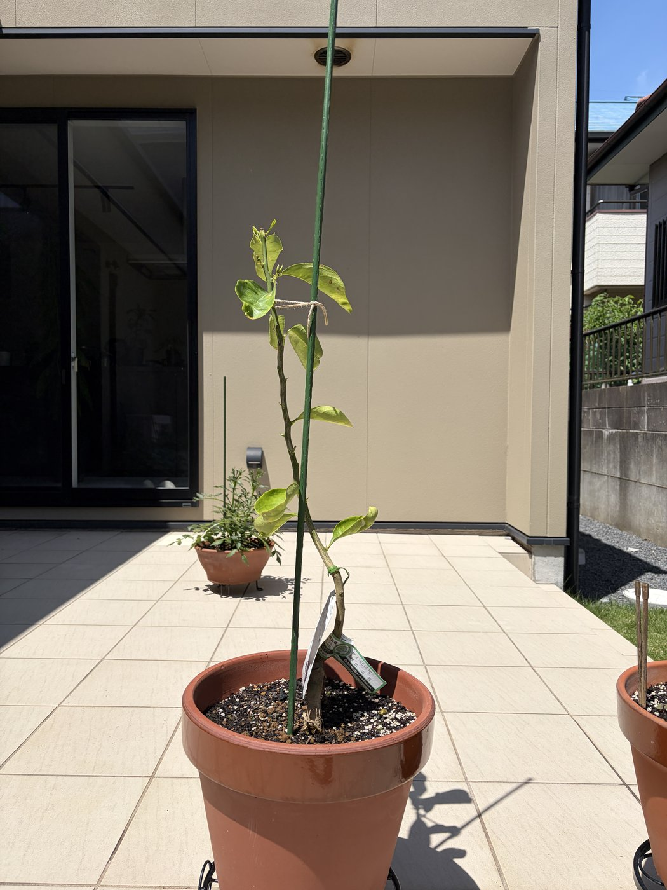
{kind=link}
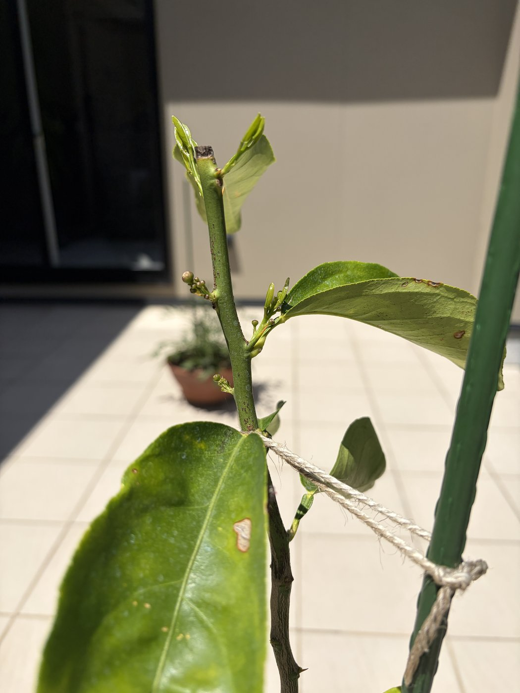
植え付けから約2か月。樹形は相変わらず細身で葉数は少なく、ボリュームの差はマイヤーと開き気味。ただし拡大写真のとおり初めて蕾を確認(小さな丸い蕾が複数)し、枝先には鮮やかな黄緑の新芽も展開中で、成長点はしっかり動いている。トゲが目立つのは璃の香の若木らしい特徴。葉の1枚に茶色の傷(かじられ跡または物理傷)、幹には品種ラベルが付いたまま。
注意:蕾はマイヤー(7/04)と同じく1年目方針に従い、膨らむ前に摘み取る。ラベルの紐は幹に食い込む前に外す。下葉の黄化は前回からの経過観察を継続し、広がるようなら水のやり過ぎ・根傷みを疑う。葉の傷は拡大して虫害か確認、葉裏のハダニ・アゲハ卵チェックも継続。

ガイドの方針「1年目の花は全部摘む」に従い、開花した花とつぼみを全て摘み取った(摘花)。回収したのは写真のとおりざっと30〜40輪ほどで、開いた花と紫紅色のつぼみが混在。摘む際に葉が1枚混じった程度で、枝葉への大きな傷みはなし。これで木のエネルギーを花・実ではなく根と枝葉の充実に回す。
注意:今後もつぼみが上がってきたら都度摘み取る。最初の収穫は早くて2027年秋、本格的には2028年以降なので焦らない。摘花直後は切り口から病気が入らないよう、梅雨〜盛夏の水やり(朝)と葉裏のアゲハ・ハダニ確認を継続する。
(この日は璃の香の記録なし)

6/13時点では花・つぼみは見られなかったが、枝先に白い花が1輪開花し、周囲に紫紅色を帯びたつぼみが多数ついた。レモンらしい5弁花で、雄しべの葯は黄色。葉には水滴が残り(朝の水やりまたは雨)、下葉の一部に黄化が続く。
注意:開花・結実は木を消耗させるため、ガイドの1年目方針どおり数日内に全て摘花する予定(→ 7/04 実施)。ここでは初開花の記録として残す。花が咲くこと自体は根が活着し木が充実してきたサインで、順調な兆候。
(この日は璃の香の記録なし)

植え付けから約1か月。葉色は濃いまま保たれ、明るい黄緑の新芽が複数展開している。根が活着して成長点が動いている状態。下葉が数枚黄ばむが、古い葉の更新で量も少なく問題なし。実・花はなし(枝に下がっているのは品種ラベルの札)。
注意:ラベルの紐が枝に食い込む前に外す。これから梅雨〜盛夏は鉢が乾きやすいので朝の水やりを徹底し、タイルの照り返し・高温に注意。新芽はアゲハの産卵を受けやすいので、葉裏と新芽を定期的に確認する。

植え付けから約1か月。もとからひょろ長く(徒長気味)、幹の中間に葉が少ない樹形。上部には新しい枝と鮮やかな新葉が伸びており、成長自体は続いている。一方で中〜下部の葉に黄ばみ・しおれが見られ、葉数・密度はマイヤーに見劣りする。
注意:下葉の黄化が広がるか止まるかを2週間ごとに観察。広がる・落葉が進む場合は水のやり過ぎや根傷みを疑う。徒長の改善にはよく日へ当てること。Web縮小版では分からないハダニ・カイガラ等は、葉裏を直接チェックする。

植え付け直後。植え付け手順スライドのとおりに作業。

植え付け直後。植え付け手順スライドのとおりに作業。